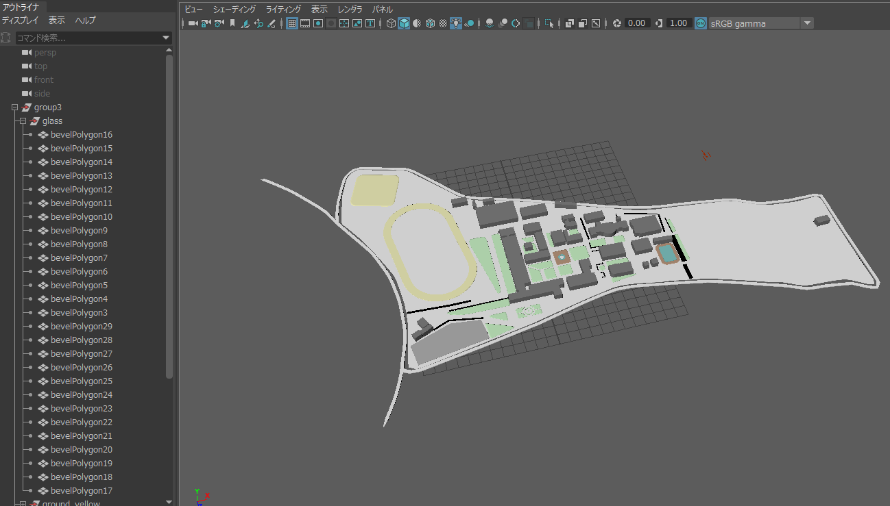

舞鶴高専校内を閲覧できるストリートビューアプリの製作

舞鶴高専4年のとき、くじで決められた4人グループで、「地域課題を解決するアプリケーションの製作」という課題でスタートしました。
運よく、私以外に、プログラムを得意とするメンバーが多かったため、私はリーダー兼他雑用を行いました。
ここで、アルゴリズムが得意な子と、ゲームなどの製作が得意な子がいたため、全員で意見を出した結果、Googleのストリートビューのような物を製作する事になりました。
アプリの仕様は、通常の地図機能、ある地点から目的の地点までの最短ルートを示す機能、地点ごとに360度画像を表示でき、ストリートビューのように移動できる機能でした。
ここで必要なデータは、地図を表示するグラフィックデータ、通行可能な部分の情報、ストリートビューの360度の画像でした。使用する環境はUnityでした。
私の役割は、これらデータの作成となりました。(360度の画像は、すべて他のメンバーが撮影してくれました)
地図のグラフィックは、大きく拡大するため、画質の劣化をなくすため、ベクタ画像編集ソフトにて、屋内部分は学校の資料を参考に、屋外部分はwebの地図サービスの航空写真を参考に、トレースしました。
ここで、UnityではSVGベクタ画像を扱いづらいことが判明し、急遽3Dモデリングソフトを用い、SVGから、厚みを付けた3D形式に変換して利用しました。(不意打ちの問題でした)

また、通行可能なルートを、Excelを利用し、CSV形式のデータとして保存し、利用しました。
また、メンバーには、ストリートビューの表示部分のプログラムや、最短経路導出プログラムなどを別々に担当してもらいましたが、
想定よりプログラムの結合が難しかったため、スケジュールの調整などを行い、何とか完成させることができました。
特にプログラムを担当したメンバーには、最終日ギリギリまで頑張ってもらいました
もともと仲の良いメンバーだったので、柔軟に対応してもらいましたが、このとき、コミュニケーションの重要さを感じました
レポート↓
32_山入端斗哉_創造工学報告書.pdf